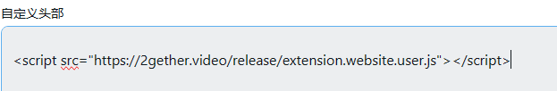
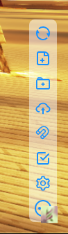
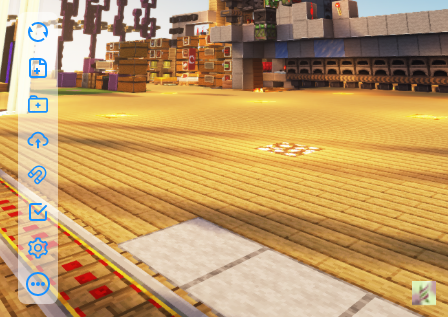

搭配使用Alist和VideoTogether
#留存
本文的目的在于有些想要同时使用Alist和VideoTogether的用户。教程主要面向使用体验，所以也只是面向一些相对小白的一些用户。当然前提是最好已经使用过Alist和VideoTogether。
为什么用Alist和VideoToghther
主要原因是ViedeoTogether虽然可以支持大多数的视频网站，但是无奈于各大视频网站其实体验并不好。正版网站之流基本都需要会员，而盗版网站经常遇到加载失败且非常不稳定。所以使用一个“自己管理的视频网站”来进行同步就很有必要了。所以使用Alist来进行视频播放刚好解决了这一点。
同时Alist可以通过全局自定义头部来添加VideoTogether到网站中。这样就不用要求每个小伙伴都安装好VideoTogether插件。而通过打开链接就可以直接同步。
部署Alist
这部分主要参考Alist的官方文档。基本完全参考官方文档中的Docker方式。本文是安装到一台已经安装好docker-compose的VPS中(这部分可以参考这个链接：Install the Compose plugin )。
当然Alist也可以部署到如群晖软路由等等各种奇怪的地方，具体可以参考Alist官方文档。
下面是一个部署的过程。
1.通过SSH链接到VPS中
2.在文档中复制官方的docker-compose文件到VPS中
version: '3.3'
services:
alist:
restart: always
volumes:
- '/etc/alist:/opt/alist/data'
ports:
- '5244:5244'
environment:
- PUID=0
- PGID=0
- UMASK=022
container_name: alist
image: 'xhofe/alist:main'
3.docker-compose文件写好后用下面的命令启动。有的国内运营的VPS，可能需要注意一下端口的开放情况。可能需要放行规则或者关闭防火墙。
docker-compose up -d
4.这里就会启动容器，可以通过下面的命令查看。
docker ps
5.通过以下的命令来查看admin密码。
docker exec -it alist ./alist admin
6.接下来就可以通过 IP:5244 的方式来进行访问了。如果没有问题，就可以通过admin和上面的密码登录到后台了。
添加VideoTogether到网站中。
根据VideoTogether的文档
只需要一条script就可以添加。
<script src="https://fastly.jsdelivr.net/gh/VideoTogether/VideoTogether@latest/release/extension.website.user.js"></script>
1.进入Alist后台，找到全局设置。

2.VideoToghther的script到自定义头部中。

3.保存好后回到主页就可看见右下角的VideoTogether按钮。

这里其实有个槽点在于Alist的工具栏和VideoToghther其实相互挡住了按钮。所以这里我们可以再添加一个自定义头部来修改Alist按钮的位置。
<script>
document.addEventListener("DOMContentLoaded", () => {
const seAList = document.createElement("style");
seAList.innerHTML = `
.left-toolbar-box {
left: var(--hope-space-5);
right: auto;
}
`;
document.body.appendChild(seAList);
});
</script>
就会变成下图的效果。这样能改善不少。

使用上的流程
至此，你就可以在Alist上添加各式各样的存储，并使用在线功能预览视频，加上网页上自带的VideoTogether来同步观看视频了。

不过需要注意的是，预览视频很看重视频的格式。如果你的视频有多音轨或者格式不算太主流，那么很多视频都会没有声音（算是最大的一个使用上问题）。